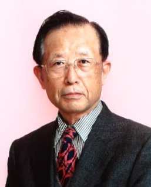
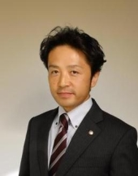
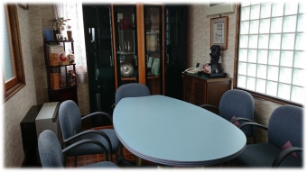

成らぬは人の 為さぬなりけり
宮澤良康会計事務所
長野県諏訪市の税理士・行政書士事務所。開業50有余年を経過し、業界では歴史のある、信頼のある、何でも気軽に相談できる事務所として発展してまいりました。
事務所紹介

他を利する利他業の実行で
感謝される事務所として。
開業してから50有余年を経過し、業界では歴史のある、信頼のある、何でも気軽に相談できる事務所として発展してきました。
他を利する利他業（他人に幸せを）の実行で感謝される事務所として今日に至っております。
適正な利益と適正な納税の実現で社会に奉仕貢献し、個人も企業も物・心（ぶっ しん）両面で幸せになることを願って、お手伝いをさせて頂いております。
毎月の巡回監査では、適正な会計処理、適正な税務処理、適切な経営指導を行っております。
まずは、どんなことでもかまいません、お気軽にご相談下さい。
所長経歴
趣味
好きな言葉
- 念ずれば花開く（坂村真民）
- 道はある（明治天皇）
- なせばなる、なさねばならぬなにごとも、ならぬは人のなさぬなりけり（上杉鷹山）
経営理念
「自利利他」の理念の実践とは
TKC全国会の基本理念である「自利利他」について、ＴＫＣ全国会創設者飯塚毅は次のように述べています。
大乗仏教の経論には「自利利他」の語が実に頻繁に登場する。解釈にも諸説がある。その中で私は「自利とは利他をいう」（最澄伝教大師伝）と解するのが最も正しいと信ずる。
仏教哲学の精髄は「相即の論理」である。般若心経は「色即是空」と説くが、それは「色」を滅して「空」に至るのではなく、「色そのままに空」であるという真理を表現している。
同様に「自利とは利他をいう」とは、「利他」のまっただ中で「自利」を覚知すること、すなわち「自利即利他」の意味である。他の説のごとく「自利と、利他と」といった並列の関係ではない。
そう解すれば自利の「自」は、単に想念としての自己を指すものではないことが分かるだろう。それは己の主体、すなわち主人公である。
また、利他の「他」もただ他者の意ではない。己の五体はもちろん、眼耳鼻舌身意の「意」さえ含む一切の客体をいう。
世のため人のため、つまり会計人なら、職員や関与先、社会のために精進努力の生活に徹すること、それがそのまま自利すなわち本当の自分の喜びであり幸福なのだ。
そのような心境に立ち至り、かかる本物の人物となって社会と大衆に奉仕することができれば、人は心からの生き甲斐を感じるはずである。
ＴＫＣ会計人の行動指針
毎月、会計専門家が貴社を訪問し、次の業務を支援します。
- 同業他社（黒字・優良企業）と比較して、次期の目標設定を支援します。
- 目標必達のために、短期・中期経営計画をご一緒に練り上げます。
- 確実に目標達成できているか、毎月検証し、分かりやすく報告します。
- １人当たりの賃金は高く、労働分配率は低い経営の実現を支援します。
- 法令に完全準拠した会計帳簿書類の作成を支援します。
- 迅速かつ正確に月次決算を実施し、前月までの業績を報告します。
- 期末３か月前には戦略的決算対策を実施し、次の打ち手を検討します。
- 自己資本比率とキャッシュフローの改善を目標に経営アドバイスします。
- 外部に公開する決算書が正しい手続きで作成されたことを証明します。
- 前月末までの試算表（B/S、P/L）を、速やかに提出できるようにします。
- 会計記帳においては、過去記録の修正・改ざんを完全に防止します。
- コンプライアンス（法令・規範遵守）を重視する経営風土が定着します。
- 専門家として、税法を分かりやすく解説し、正しい税務対策を提案します。
- 正しい税務申告のために（税理士法第33条の2による）書面添付を実践します。
- 最新の税法等に基づき土地・自社株等を評価し、事業承継を支援します。
- 個人の財産運用における税務上のご質問にも的確にお答えします。
- ビジネスに役立つインターネットとデータベースの有効活用を提案します。
- 会計ソフト（FX2）により、月次決算から日次決算への移行を実現します。
- 部門別の貢献利益、商品グループ別の利益動向が正確に把握できます。
- ネットワークによる本支店の業績管理、リアルタイム経営を実現します。
- 小売店から専門病院までのベスト・ビジネスモデルを提示します。
- 採算性と投資効率の観点から信頼される創業計画づくりに貢献します。
- 経営者が事業に専念できるように、社内の諸制度を整備します。
- 専門家として、創業者の立場に立った株式公開プランを提案します。
業務案内
◇ 税理士業務
- 会社設立、個人事業の開業のお手伝い
- 法人・個人事業者へのサポート
- 定期的にご訪問
- 決算及び確定申告書作成
- 給与計算
- 年末調整
- 経営改善計画策定支援のご相談等
- 相続対策のご相談から申告までのサポート
◇ 行政書士業務
- 会社設立手続
- 建設業許可申請、経営事項審査手続
- 産業廃棄物収集運搬業許可申請手続
- 遺産分割、遺言、相続の手続
- 各種契約書作成及び許認可申請手続
※司法書士連携して、会社の設立から解散まで法人登記全般を承ります。
会社法の改正により、会社設立手続きが簡素化されました。しかし、いざ会社を設立するとなると様々な手続きや提出書類が多く、設立後は、帳簿を作成するにあたり税務に関する専門知識が必要になります。
そのようないくつかの不安に関して、私たちはあなたの夢を実現させるパートナーとなり、設立から、設立後の日々の帳簿作成の指導などを全力でサポートいたします。
株式会社形態にすることのメリット
- 社会的信用の向上
- 融資面において、資金調達が有利
- 「青色申告」をすれば、その期の赤字を９年間繰越控除ができ、節税が可能
- 株主は、出資額の範囲中で責任を負う有限責任
・「青色申告」とは取引を細かく帳簿に記録し、税金などを控除できる額が多い方法。
・「白色申告」とは、日々の支出の合計金額のみを記録し帳簿を作成し申告する方法で控除はほとんどない。
- 毎月またはご相談に応じて定期的にご訪問
宮澤会計事務所では、スタッフがお客様の会社にお伺いし、ご自身で会計処理をされているお客様の入力データと証憑に会計上、税務上の観点からチェック、経営状況の説明、今後の対応策などのアドバイスをいたします。
毎月、会計指導及び税務指導を行うことにより、会計帳簿の真実性および対外部への信頼性を確保します。 - 決算及び確定申告書作成
- 給与計算
- 年末調整
- 経営改善計画策定支援のご相談
- 他、お客様のご要望に応じて最大限のサポートをいたします。
個人事業においても、帳簿の作成が必要になりました。規則に従った帳簿を作成し、所定の届出をすれば、「青色申告」により確定申告ができます。
青色申告のメリット
- 所得から65万円を控除
「青色申告特別控除」という制度で、不動産所得や事業所得のある方を対象に所得から65万円を控除することができます。これにより、納める税金を少なくすることができます。 - 純損失（赤字）の3年間の繰越し
儲けが出るとその分支払う税金が多くなります。逆に、赤字になってしまった場合にその赤字を繰越し、翌年に黒字になった場合、前年に繰越した赤字と相殺ができます。これにより黒字になった年も納める税金を少なくすることができます。 - 配偶者や15歳以上の親族に給与を支払った場合の経費算入
「青色事業専従者給与の必要経費算入」という制度で、適正な金額を必要経費に算入することができます。これにより、利益を減らし納める税金を少なくすることができます。
青色申告をするためには
- 所轄税務署に所定の期限内に届出をする
- 正規の簿記の原則に従った会計帳簿をつける（毎月）
- 決算で損益計算書と貸借対照表を作成する（決算時）
- 収入金額や必要経費を記載した帳簿を7年間保存
- その他の帳簿及び書類を5年間保存
- 毎月または相談に応じて定期的にご訪問
会計処理が簿記の原則に従っており、税法に準じて処理されているかをチェックします。 - 決算及び確定申告書作成
- 給与計算
- 年末調整
- 経営改善計画策定支援のご相談
- 他、お客様のご要望に応じて最大限のサポートをいたします
相続は、事前に準備や対策をしておくことが重要です。十分な対策ができていれば、非常に効果的な相続税の節税をすることができます。
- 「節税対策」＝相続税を少なくすること
- 「納税資金対策」＝相続税を納めるお金を用意すること
- 「争続対策」＝相続人同士で争わないようにすること
相続税は、被相続人が残した財産を評価しますが、現金よりも土地を持っている方のほうが相続税は安くなる場合があります。しかし、相続税を納めるには現金を相続したほうがいいかもしれません。
また、どの財産を相続するかにより、仲の良かった兄弟の縁が切れてしまうこともあります。
このように、「相続」にはわからないこと、知っておいた方がいいことが沢山ございます。
私たちはご相談に応じ、お客様にとってベストな選択のご提案と、トラブルを事前に解決するサポートをいたします。
当事務所は、平成25年7月、経済産業大臣より経営革新等支援機関の認定を受けています。経営改善計画策定支援、TKCシステム（FX4クラウド・FX2・e21まいスター等）による業績管理体制の構築、書面添付制度による税務申告の適正性向上、事業承継・相続対策、融資商品のご紹介まで、幅広くご支援いたします。
詳細な各種支援業務のご案内はお電話またはメールでお気軽にお問合せください。
職員紹介


応接室
ご相談や打ち合わせ等を行います。
交通案内
- 事務所名
- 宮澤良康会計事務所
- 所長名
- 宮澤良康
- 所在地
- 長野県 諏訪市湖岸通り1-17-10
- 電話番号
- 0266-58-3838
- FAX番号
- 0266-58-3839
- 受付時間
- 月曜〜金曜日 8:30〜17:15
お知らせ
■ 事務所のお知らせ ■ 2018年 翌月巡回監査率80％超達成
TKCの巡回監査とは、関与先を毎月及び期末決算時に巡回し、会計資料並びに会計記録の適法性、正確性及び適時性を確保するため、会計事実の真実性、実在性、網羅性を確かめ、かつ指導することです。巡回監査においては、経営方針の健全性の吟味に努めております。
巡回監査の必要性
- 真正の事実を確保するため
- 的確な情報と助言を関与先企業に提供するため
毎月の巡回監査によって、正確かつタイムリーな経営助言ができる正確な情報を提供することができ、経営者様の意思決定にお役立てできると信じております。
当事務所では、翌月巡回監査率100％を目指していますが、当事務所だけでは達成できない目標です。
経営者様の早期の経営判断のためにも、毎日の業務でお忙しいとは思いますが、会計処理は日々の日課にしていただき、翌月の巡回監査にご協力をお願いします。
お問合せ
お気軽にお問合せください。
TEL：0266-58-3838まずは、どんなことでもかまいません、お気軽にご相談下さい。開業50有余年、諏訪・茅野地域の経営者・個人事業主・相続相談の皆様のご相談に、誠心誠意お応えいたします。